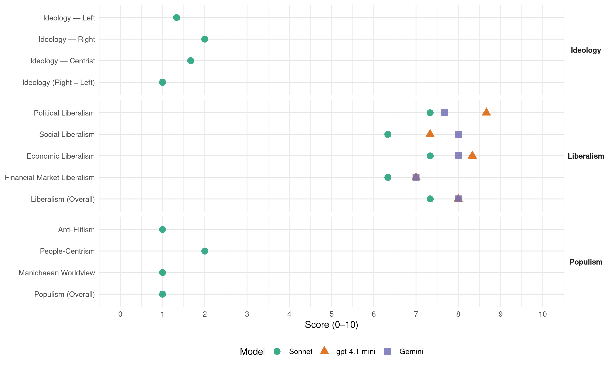

National (New Zealand, 1972)
manifesto_id 64620_197211
Get full text: This site shows derived annotations and short verbatim quotes only. The full manifesto text is © Manifesto Project / WZB — obtain it via manifesto-project.wzb.eu using the manifesto_id above.
Headline scores
| Dimension | Sonnet | gpt-4.1-mini | Gemini |
|---|---|---|---|
| Populism (Overall) | 1.0 | – | – |
| Anti-Elitism | 1.0 | – | – |
| People-Centrism | 2.0 | – | – |
| Manichaean Worldview | 1.0 | – | – |
| Ideology (Right − Left) | 1.0 | – | – |
| Liberalism (Overall) | 7.3 | 8.0 | 8.0 |
| Political Liberalism | 7.3 | 8.7 | 7.7 |
| Social Liberalism | 6.3 | 7.3 | 8.0 |
| Economic Liberalism | 7.3 | 8.3 | 8.0 |
| Financial-Market Liberalism | 6.3 | 7.0 | 7.0 |
Evidence per dimension
Economic Liberalism
Gemini · score 8.0 · verified · chunk 1
“individual initiative and private enterprise”
THE FUNDAMENTAL OUTLOOK OF THE NATIONAL GOVERNMENT FAVOURS AS MUCH INDIVIDUAL INITIATIVE AND PRIVATE ENTERPRISE AS POSSIBLE AIMS TO PRESERVE THE GREATEST
Gemini · score 8.0 · verified · chunk 2
“private competitive enterprise with a minimum”
achieved by private competitive enterprise with a minimum of state regulation
Gemini · score 8.0 · verified · chunk 3
“VIGOROUS PRIVATE ENTERPRISE AS THE MAINSPRING”
THE NATIONAL GOVERNMENT RE-AFFIRMS ITS FAITH IN THE VALUE OF VIGOROUS PRIVATE ENTERPRISE AS THE MAINSPRING OF ECONOMIC DEVELOPMENT
gpt-4.1-mini · score 8.0 · verified · chunk 1
“THE FUNDAMENTAL OUTLOOK OF THE NATIONAL GOVERNMENT FAVOURS AS MUCH INDIVIDUAL INITIATIVE AND PRIVATE ENTERPRISE AS POSSIBLE”
6. THE FUNDAMENTAL OUTLOOK OF THE NATIONAL GOVERNMENT FAVOURS AS MUCH INDIVIDUAL INITIATIVE AND PRIVATE ENTERPRISE AS POSSIBLE AIMS TO PRESERVE THE GREATEST MEASURE OF FREEDOM IN ALL ASPECTS OF ECONOMIC AND PERSONAL AFFAIRS. THE NATIONAL DEVELOPMENT COUNCIL MECHANISM PROVIDES A MEANS OF CONSULTATION AND CO-OPERATION TOWARDS THIS END THROUGH LEADING FIGURES IN TRADE AND INDUSTRY, THE TRADE UNIONS, THE UNIVERSITIES, AND THE STATE SERVICES.
gpt-4.1-mini · score 9.0 · verified · chunk 2
“THE NATIONAL GOVERNMENT BELIEVES THAT CONTINUING INDUSTRIAL EXPANSION IS ESSENTIAL”
INDUSTRY. BASIC POLICY. 1. NATIONAL GOVERNMENT BELIEVES THAT CONTINUING INDUSTRIAL EXPANSION IS ESSENTIAL TO THE FUTURE DEVELOPMENT OF THE ECONOMY, TO INCREASED EMPLOYMENT OPPORTUNITIES FOR OUR PEOPLE AND TO FURTHER IMPROVEMENT OF THE STANDARD OF LIVING. THE NATIONAL GOVERNMENT HAS ADOPTED THE NATIONAL DEVELOPMENT CONFERENCE TARGETS SET FOR MANUFACTURING INDUSTRIES.
gpt-4.1-mini · score 8.0 · verified · chunk 3
“THE NATIONAL GOVERNMENT RE-AFFIRMS ITS FAITH IN THE VALUE OF VIGOROUS PRIVATE ENTERPRISE”
1. THE NATIONAL GOVERNMENT RE-AFFIRMS ITS FAITH IN THE VALUE OF VIGOROUS PRIVATE ENTERPRISE AS THE MAINSPRING OF ECONOMIC DEVELOPMENT AND, WITH A VIEW TO GRANTING THE GREATEST POSSIBLE FREEDOM TO BUSINESS, THE NATIONAL GOVERNMENT WILL CONTINUE TO REMOVE OR RELAX CONTROLS OVER TRADING WHICH CANNOT BE JUSTIFIED WITHIN A POLICY OF PROMOTING PRIVATE COMPETITIVE ENTERPRISE.
Sonnet · score 7.0 · verified · chunk 1
“INDIVIDUAL INITIATIVE AND PRIVATE ENTERPRISE AS POSSIBLE”
THE FUNDAMENTAL OUTLOOK OF THE NATIONAL GOVERNMENT FAVOURS AS MUCH INDIVIDUAL INITIATIVE AND PRIVATE ENTERPRISE AS POSSIBLE AIMS TO PRESERVE THE GREATEST MEASURE OF FREEDOM IN ALL ASPECTS OF ECONOMIC AND PERSONAL AFFAIRS.
Sonnet · score 7.0 · verified · chunk 2
“private competitive enterprise with a minimum of state regulation”
THE NATIONAL GOVERNMENT BELIEVES THIS INDUSTRIAL EXPANSION WILL BE ACHIEVED BY private competitive enterprise with a minimum of state regulation AND CONTROL.
Sonnet · score 8.0 · verified · chunk 3
“faith in the value of vigorous private enterprise”
THE NATIONAL GOVERNMENT RE-AFFIRMS ITS FAITH IN THE VALUE OF VIGOROUS PRIVATE ENTERPRISE AS THE MAINSPRING OF ECONOMIC DEVELOPMENT
Financial-Market Liberalism
Gemini · score 7.0 · verified · chunk 1
“more sophisticated financial system”
In the economic sphere, for the more mature type of economy we have been developing in New Zealand, we envisage a more sophisticated financial system, able to provide economical use
Gemini · score 7.0 · verified · chunk 2
“encourage private sources to invest”
adequate finance, and will encourage private sources to invest more in the house
Gemini · score 7.0 · verified · chunk 3
“establishment of Merchant Banks which will play”
Approval has been given for the establishment of Merchant Banks which will play their part in mobilising overseas capital for investment
gpt-4.1-mini · score 7.0 · verified · chunk 1
“THE NATIONAL GOVERNMENT WILL CONTINUE TO MAKE MAXIMUM USE OF ZEALANDERS’ SAVINGS, AND OF SUPPLEMENTING THESE WITH OVERSEAS BORROWING”
6. THE NATIONAL GOVERNMENT WILL CONTINUE ITS POLICY OF MAKING MAXIMUM USE OF ZEALANDERS’ SAVINGS, AND OF SUPPLEMENTING THESE WITH OVERSEAS BORROWING, IN ORDER TO MEET THE CAPITAL NEEDS OF OUR RAPIDLY DEVELOPING ECONOMY. THE PRODUCTIVE AND EXPORT POTENTIAL OF NEW ZEALAND FARMS AND INDUSTRIES JUSTIFIES THE CONFIDENCE OF THE NATIONAL GOVERNMENT THAT THE GREATER PRODUCTION RESULTING FROM THE INCREASED CAPITAL RESOURCES WILL ENABLE THE COUNTRY TO MEET THE LOAN REPAYMENTS AND INTEREST CHARGES.
gpt-4.1-mini · score 7.0 · verified · chunk 2
“THE NATIONAL GOVERNMENT WILL CONTINUE TO PROVIDE FINANCE NECESSARY TO ENSURE THAT QUALIFYING FARMERS MAY DEVELOP”
FARMING. 26. Farm financing through the State Advances Corporation has increased during the term of the present National Government from an average of $14.8 million per annum in 1958/60 to an average of $35.86 million per annum in 1961/72, the total amount of advances since 1961 amounting to $430.38 million. We will continue to provide the finance necessary to ensure that qualifying farmers may develop their properties and increase the output of exportable produce.
gpt-4.1-mini · score 7.0 · verified · chunk 3
“THE NATIONAL GOVERNMENT WELCOMES OVERSEAS LOAN AND EQUITY CAPITAL FOR THE DEVELOPMENT OF INDUSTRY”
11. WHILE THE MAIN SOURCE OF CAPITAL FOR INVESTMENT MUST COME FROM WITHIN NEW ZEALAND THE NATIONAL GOVERNMENT WELCOMES OVERSEAS LOAN AND EQUITY CAPITAL FOR THE DEVELOPMENT OF INDUSTRY, WHEREVER POSSIBLE IN CONJUNCTION WITH NEW ZEALAND SHAREHOLDING. PUBLICATIONS SETTING OUT GOVERNMENT POLICY AND CONTAINING ADVICE TO INVESTORS HAVE BEEN WIDELY DISTRIBUTED WITHIN NEW ZEALAND AND OVERSEAS.
Sonnet · score 6.0 · verified · chunk 1
“more sophisticated financial system, able to provide economical use”
we envisage a more sophisticated financial system, able to provide economical use off available resources for the various avenues of investment.
Sonnet · score 6.0 · verified · chunk 2
“encourage private sources to invest more”
The National Government will provide adequate finance, and will encourage private sources to invest more in the house construction sector
Sonnet · score 7.0 · verified · chunk 3
“establishment of Merchant Banks which will play”
Approval has been given for the establishment of Merchant Banks which will play their part in mobilising overseas capital for investment in New Zealand in partnership with New Zealand investors.
Political Liberalism
Gemini · score 8.0 · verified · chunk 1
“reduced the age for voting to 20”
In recognition of the higher standards of education and earlier maturity of young people, the National Government reduced the age for voting to 20 and made other downward adjustments
Gemini · score 7.0 · verified · chunk 2
“peace, the rule of law”
to promote peace, the rule of law and the solution of international
Gemini · score 8.0 · verified · chunk 3
“DEMOCRATIC AND RESPONSIBLE GOVERNMENT OF THE PEOPLE”
WE STAND FOR LOYALTY TO THE QUEEN AND FOR DEMOCRATIC AND RESPONSIBLE GOVERNMENT OF THE PEOPLE FOR THE PEOPLE BY THE ELECTED REPRESENTATIVES
gpt-4.1-mini · score 9.0 · verified · chunk 1
“THE NATIONAL GOVERNMENT AFFIRMS THAT NATIONAL DEVELOPMENT IN THE BROADEST SENSE MUST, AS FAR AS POSSIBLE, INVOLVE ALL PRODUCTIVE AREAS IN THE COUNTRY.”
1. THE NATIONAL GOVERNMENT AFFIRMS THAT NATIONAL DEVELOPMENT IN THE BROADEST SENSE MUST, AS FAR AS POSSIBLE, INVOLVE ALL PRODUCTIVE AREAS IN THE COUNTRY. WE BELIEVE THAT INCREASING OPPORTUNITIES FOR EMPLOYMENT AND INVESTMENT IN ALL AREAS OF NEW ZEALAND WOULD BE CONDUCIVE TO MORE STABLE PATTERNS OF COMMUNITY LIFE AND COUNTERACT THE UNDUE GROWTH AND PROBLEMS OF THE METROPOLITAN COMPLEXES.
gpt-4.1-mini · score 8.0 · verified · chunk 2
“THE NATIONAL GOVERNMENT BELIEVES ITS FIRST DUTY IS TO DEFEND THE PEOPLE OF NEW ZEALAND”
DEFENCE. BASIC POLICY. 1. THE NATIONAL GOVERNMENT BELIEVES ITS FIRST DUTY IS TO DEFEND THE PEOPLE OF NEW ZEALAND AND TO THIS END WILL ENSURE THAT ADEQUATE WELL-EQUIPPED AND WELL-TRAINED FORCES ARE PROVIDED. 2. THE NATIONAL GOVERNMENT BELIEVES THAT THE PROTECTION OF NEW ZEALAND’S SECURITY AND INDEPENDENCE, THE PROTECTION OF OUR NATIONAL INTERESTS AND THE MAINTENANCE OF AN EFFECTIVE VOICE IN INTERNATIONAL AFFAIRS AFFECTING OUR SECURITY, REQUIRE THAT WE PURSUE A VIGOROUS POLICY OF COLLECTIVE DEFENCE IN CONCERT WITH OUR ALLIES.
gpt-4.1-mini · score 9.0 · verified · chunk 3
“WE STAND FOR LOYALTY TO THE QUEEN AND FOR DEMOCRATIC AND RESPONSIBLE GOVERNMENT”
2. WE STAND FOR LOYALTY TO THE QUEEN AND FOR DEMOCRATIC AND RESPONSIBLE GOVERNMENT OF THE PEOPLE FOR THE PEOPLE BY THE ELECTED REPRESENTATIVES OF THE PEOPLE . 3. WE BELIEVE THAT AS A PROTECTION AGAINST THE ABUSE OF POWER THE ESTABLISHED DIVISION OF POWERS SHOULD BE MAINTAINED WHEREBY PARLIAMENT MAKES THE LAW, IMPOSES TAXATION AND AUTHORISES EXPENDITURE, THE GOVERNMENT ADMINISTERS THE LAW, CONDUCTS THE AFFAIRS OF STATE AND CARRIES OUT ITS EXECUTIVE FUNCTIONS, AND THE COURTS INTERPRET THE LAW AND ADMINISTER JUSTICE SO THAT NO ONE IS ABOVE OR OUTSIDE THE RULE OF LAW.
Sonnet · score 7.0 · verified · chunk 1
“recognises academic freedom and established autonomous universities”
The National Government recognises academic freedom and established autonomous universities. This independence is safeguarded by the Government’s relationship with the separate universities being channelled through an independent University Grants Committee.
Sonnet · score 7.0 · verified · chunk 2
“promote peace, the rule of law”
CO-OPERATE ACTIVELY WITH OTHER COUNTRIES IN WORLD FORUMS SUCH AS THE UNITED NATIONS AND THE COMMONWEALTH TO promote peace, the rule of law AND THE SOLUTION OF INTERNATIONAL PROBLEMS BY NEGOTIATION.
Sonnet · score 8.0 · verified · chunk 3
“enlargement of personal liberties and responsibilities under the rule of law”
THE NATIONAL GOVERNMENT’S CONSTITUTIONAL POLICY AIMS AT THE ENLARGEMENT OF PERSONAL LIBERTIES AND RESPONSIBILITIES UNDER THE RULE OF LAW AND THE FURTHER EXTENSION OF OUR PROPERTY-OWNING DEMOCRACY.
Liberalism (Overall)
Gemini · score 8.0 · verified · chunk 1
“individual initiative and private enterprise”
THE FUNDAMENTAL OUTLOOK OF THE NATIONAL GOVERNMENT FAVOURS AS MUCH INDIVIDUAL INITIATIVE AND PRIVATE ENTERPRISE AS POSSIBLE AIMS TO PRESERVE THE GREATEST
Gemini · score 8.0 · verified · chunk 2
“private competitive enterprise with a minimum”
achieved by private competitive enterprise with a minimum of state regulation
Gemini · score 8.0 · verified · chunk 3
“ENLARGEMENT OF PERSONAL LIBERTIES AND RESPONSIBILITIES”
THE NATIONAL GOVERNMENT’S CONSTITUTIONAL POLICY AIMS AT THE ENLARGEMENT OF PERSONAL LIBERTIES AND RESPONSIBILITIES UNDER THE RULE OF LAW
gpt-4.1-mini · score 8.0 · verified · chunk 1
“THE FUNDAMENTAL OUTLOOK OF THE NATIONAL GOVERNMENT FAVOURS AS MUCH INDIVIDUAL INITIATIVE AND PRIVATE ENTERPRISE AS POSSIBLE”
6. THE FUNDAMENTAL OUTLOOK OF THE NATIONAL GOVERNMENT FAVOURS AS MUCH INDIVIDUAL INITIATIVE AND PRIVATE ENTERPRISE AS POSSIBLE AIMS TO PRESERVE THE GREATEST MEASURE OF FREEDOM IN ALL ASPECTS OF ECONOMIC AND PERSONAL AFFAIRS. THE NATIONAL DEVELOPMENT COUNCIL MECHANISM PROVIDES A MEANS OF CONSULTATION AND CO-OPERATION TOWARDS THIS END THROUGH LEADING FIGURES IN TRADE AND INDUSTRY, THE TRADE UNIONS, THE UNIVERSITIES, AND THE STATE SERVICES.
gpt-4.1-mini · score 8.0 · verified · chunk 2
“THE NATIONAL GOVERNMENT BELIEVES THAT CONTINUING INDUSTRIAL EXPANSION IS ESSENTIAL”
INDUSTRY. BASIC POLICY. 1. NATIONAL GOVERNMENT BELIEVES THAT CONTINUING INDUSTRIAL EXPANSION IS ESSENTIAL TO THE FUTURE DEVELOPMENT OF THE ECONOMY, TO INCREASED EMPLOYMENT OPPORTUNITIES FOR OUR PEOPLE AND TO FURTHER IMPROVEMENT OF THE STANDARD OF LIVING. THE NATIONAL GOVERNMENT HAS ADOPTED THE NATIONAL DEVELOPMENT CONFERENCE TARGETS SET FOR MANUFACTURING INDUSTRIES.
gpt-4.1-mini · score 8.0 · verified · chunk 3
“WE STAND FOR LOYALTY TO THE QUEEN AND FOR DEMOCRATIC AND RESPONSIBLE GOVERNMENT”
2. WE STAND FOR LOYALTY TO THE QUEEN AND FOR DEMOCRATIC AND RESPONSIBLE GOVERNMENT OF THE PEOPLE FOR THE PEOPLE BY THE ELECTED REPRESENTATIVES OF THE PEOPLE . 3. WE BELIEVE THAT AS A PROTECTION AGAINST THE ABUSE OF POWER THE ESTABLISHED DIVISION OF POWERS SHOULD BE MAINTAINED WHEREBY PARLIAMENT MAKES THE LAW, IMPOSES TAXATION AND AUTHORISES EXPENDITURE, THE GOVERNMENT ADMINISTRES THE LAW, CONDUCTS THE AFFAIRS OF STATE AND CARRIES OUT ITS EXECUTIVE FUNCTIONS, AND THE COURTS INTERPRET THE LAW AND ADMINISTER JUSTICE SO THAT NO ONE IS ABOVE OR OUTSIDE THE RULE OF LAW.
Sonnet · score 7.0 · verified · chunk 1
“REDUCE RATES OF TAXATION TO GIVE INCENTIVES”
IT WILL BE THE CONTINUING TAXATION POLICY OF THE NATIONAL GOVERNMENT TO REDUCE RATES OF TAXATION TO GIVE INCENTIVES TO GREATER EFFORT AND ECONOMIC PROGRESS.
Sonnet · score 7.0 · verified · chunk 2
“private competitive enterprise with a minimum of state regulation”
THE NATIONAL GOVERNMENT BELIEVES THIS INDUSTRIAL EXPANSION WILL BE ACHIEVED BY private competitive enterprise with a minimum of state regulation AND CONTROL.
Sonnet · score 8.0 · verified · chunk 3
“faith in the value of vigorous private enterprise”
THE NATIONAL GOVERNMENT RE-AFFIRMS ITS FAITH IN THE VALUE OF VIGOROUS PRIVATE ENTERPRISE AS THE MAINSPRING OF ECONOMIC DEVELOPMENT
Anti-Elitism
Sonnet · score 1.0 · verified · chunk 1
“leading figures in trade and industry”
THE NATIONAL DEVELOPMENT COUNCIL MECHANISM PROVIDES A MEANS OF CONSULTATION AND CO-OPERATION TOWARDS THIS END THROUGH leading figures in trade and industry, THE TRADE UNIONS, THE UNIVERSITIES, AND THE STATE SERVICES.
Sonnet · score 1.0 · verified · chunk 2
“private competitive enterprise with a minimum”
THE NATIONAL GOVERNMENT BELIEVES THIS INDUSTRIAL EXPANSION WILL BE ACHIEVED BY private competitive enterprise with a minimum OF STATE REGULATION AND CONTROL.
Sonnet · score 1.0 · verified · chunk 3
“private competitive enterprise with a minimum”
NATIONAL GOVERNMENT BELIEVES THIS INDUSTRIAL EXPANSION WILL BE ACHIEVED BY PRIVATE COMPETITIVE ENTERPRISE WITH A MINIMUM OF STATE REGULATION AND CONTROL.
Ideology — Centrist
Sonnet · score 1.0 · verified · chunk 1
“MAXIMUM FREEDOM FOR THE INDIVIDUAL”
THE NATIONAL GOVERNMENT’S ADMINISTRATION PROVIDES OPPORTUNITIES FOR YOUTH, ENCOURAGES INITIATIVE AND ENTERPRISE, AND DEVELOPS THE KIND OF SOCIETY WHERE THERE IS MAXIMUM FREEDOM FOR THE INDIVIDUAL.
Sonnet · score 2.0 · verified · chunk 2
“housing requirements of all our people”
WE WILL ENSURE THAT NEW HOMES ARE BUILT IN SUFFICIENT NUMBERS AND AT REASONABLE PRICES TO MEET THE housing requirements of all our people.
Sonnet · score 2.0 · verified · chunk 3
“greatest possible freedom to business”
THE NATIONAL GOVERNMENT WILL CONTINUE TO REMOVE OR RELAX CONTROLS OVER TRADING WHICH CANNOT BE JUSTIFIED WITHIN A POLICY OF PROMOTING PRIVATE COMPETITIVE ENTERPRISE.
Ideology — Left
Sonnet · score 2.0 · verified · chunk 1
“GENEROUS ASSISTANCE TO VOLUNTARY COMMUNITY GROUPS”
WE WILL CONTINUE TO EXPRESS OUR CONCERN FOR PEOPLE AND THEIR WELFARE BY GIVING HIGH PRIORITY TO THE SOCIAL AND WELFARE SERVICES WITHIN GOVERNMENT AND, BY CONTINUING GENEROUS ASSISTANCE TO VOLUNTARY COMMUNITY GROUPS ENGAGED IN CHARITABLE AND HUMANITARIAN PROJECTS.
Sonnet · score 1.0 · verified · chunk 2
“special assistance for the elderly living”
its policy for the aged is based on the following principles… special assistance for the elderly living in their own homes.
Sonnet · score 1.0 · verified · chunk 3
“equal pay for equal work progressively”
The National Government applied the policy of equal pay for equal work progressively in all State Departments from 1961 to 1965.
Ideology (Right − Left)
Sonnet · score 1.0 · verified · chunk 1
“INDIVIDUAL INITIATIVE AND PRIVATE ENTERPRISE AS POSSIBLE”
THE FUNDAMENTAL OUTLOOK OF THE NATIONAL GOVERNMENT FAVOURS AS MUCH INDIVIDUAL INITIATIVE AND PRIVATE ENTERPRISE AS POSSIBLE AIMS TO PRESERVE THE GREATEST MEASURE OF FREEDOM IN ALL ASPECTS OF ECONOMIC AND PERSONAL AFFAIRS.
Sonnet · score 1.0 · verified · chunk 2
“private competitive enterprise with a minimum”
THE NATIONAL GOVERNMENT BELIEVES THIS INDUSTRIAL EXPANSION WILL BE ACHIEVED BY private competitive enterprise with a minimum OF STATE REGULATION AND CONTROL.
Sonnet · score 1.0 · verified · chunk 3
“private competitive enterprise with a minimum”
NATIONAL GOVERNMENT BELIEVES THIS INDUSTRIAL EXPANSION WILL BE ACHIEVED BY PRIVATE COMPETITIVE ENTERPRISE WITH A MINIMUM OF STATE REGULATION AND CONTROL.
Ideology — Right
Sonnet · score 2.0 · verified · chunk 1
“protect rural land, and land with a reserve potential”
passed legislation to protect rural land, and land with a reserve potential and in particular beaches and islands from purchase by non-New Zealanders.
Sonnet · score 2.0 · verified · chunk 2
“PRINCIPLE OF HOME OWNERSHIP”
THE NATIONAL GOVERNMENT BELIEVES IN THE PRINCIPLE OF HOME OWNERSHIP AND WILL ENCOURAGE THIS TO THE GREATEST EXTENT POSSIBLE.
Sonnet · score 2.0 · verified · chunk 3
“continuing flow of skilled immigrants is important”
WE CONSIDER THAT A CONTINUING FLOW OF SKILLED IMMIGRANTS IS IMPORTANT TO THE BALANCED DEVELOPMENT OF NEW ZEALAND.
Manichaean Worldview
Sonnet · score 1.0 · verified · chunk 1
“FIRM AND DECISIVE ACTION TO RESTRAIN”
THE NATIONAL GOVERNMENT IN LINE WITH ITS BASIC POLICY SET OUT ABOVE, HAS TAKEN FIRM AND DECISIVE ACTION TO RESTRAIN RISES IN WAGES AND PRICES.
Sonnet · score 1.0 · verified · chunk 2
“resisting communist aggression”
continue to help in resisting communist aggression by providing economic, medical and social aid
Sonnet · score 1.0 · verified · chunk 3
“determined to deal resolutely with trafficking”
THE NATIONAL GOVERNMENT IS DETERMINED TO DEAL RESOLUTELY WITH TRAFFICKING IN DRUGS AND THEIR ILLICIT USE AND HAS TAKEN IMPORTANT ACTION TO THIS END.
People-Centrism
Sonnet · score 2.0 · verified · chunk 1
“PROSPERITY AND SOCIAL WELFARE OF THE INCREASED POPULATION”
THE DECISIONS CURRENTLY BEING MADE BY THE NATIONAL GOVERNMENT WILL ENSURE THAT SOUND FOUNDATIONS WILL BE LAID FOR THE PROSPERITY AND SOCIAL WELFARE OF THE INCREASED POPULATION FORECAST FOR THE END OF THE CENTURY.
Sonnet · score 2.0 · verified · chunk 2
“housing requirements of all our people”
WE WILL ENSURE THAT NEW HOMES ARE BUILT IN SUFFICIENT NUMBERS AND AT REASONABLE PRICES TO MEET THE housing requirements of all our people.
Sonnet · score 2.0 · verified · chunk 3
“welfare of the community as a whole”
A GUIDING PRINCIPLE OF THE NATIONAL GOVERNMENT IS THAT THE WELFARE OF THE COMMUNITY AS A WHOLE IS BEST PROMOTED WHEN WORKERS ARE FAIRLY REWARDED
Populism (Overall)
Sonnet · score 1.0 · verified · chunk 1
“INDIVIDUAL INITIATIVE AND PRIVATE ENTERPRISE AS POSSIBLE”
THE FUNDAMENTAL OUTLOOK OF THE NATIONAL GOVERNMENT FAVOURS AS MUCH INDIVIDUAL INITIATIVE AND PRIVATE ENTERPRISE AS POSSIBLE AIMS TO PRESERVE THE GREATEST MEASURE OF FREEDOM IN ALL ASPECTS OF ECONOMIC AND PERSONAL AFFAIRS.
Sonnet · score 1.0 · verified · chunk 2
“housing requirements of all our people”
WE WILL ENSURE THAT NEW HOMES ARE BUILT IN SUFFICIENT NUMBERS AND AT REASONABLE PRICES TO MEET THE housing requirements of all our people.
Sonnet · score 1.0 · verified · chunk 3
“private competitive enterprise with a minimum”
NATIONAL GOVERNMENT BELIEVES THIS INDUSTRIAL EXPANSION WILL BE ACHIEVED BY PRIVATE COMPETITIVE ENTERPRISE WITH A MINIMUM OF STATE REGULATION AND CONTROL.
Social Liberalism